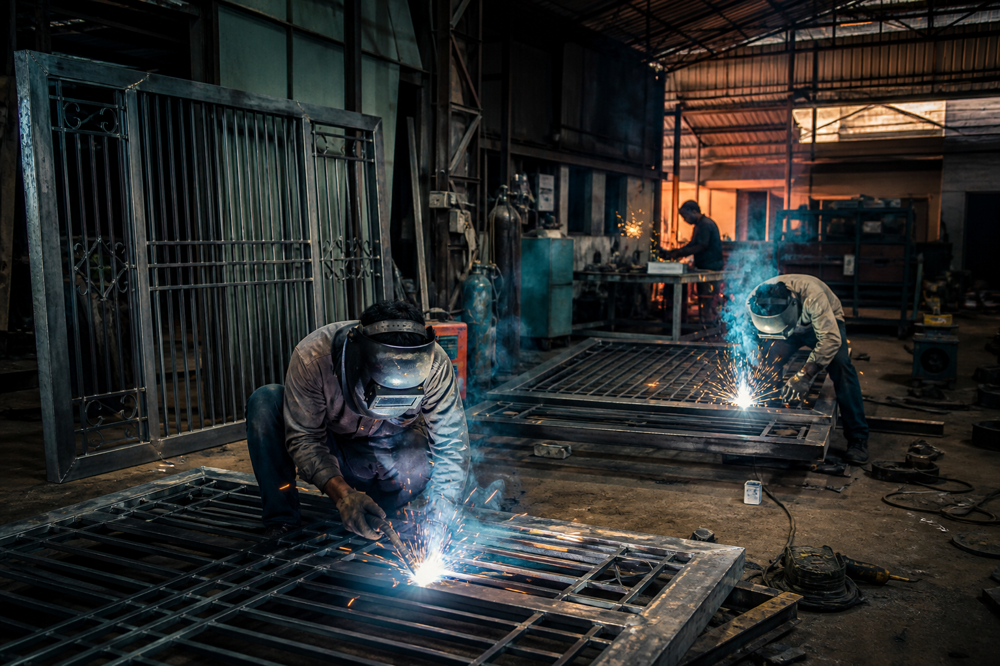
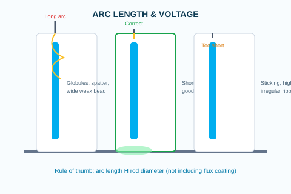
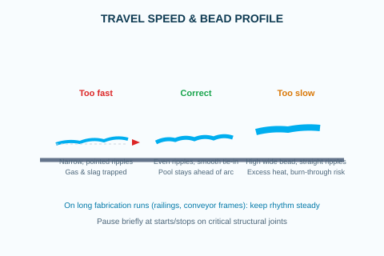
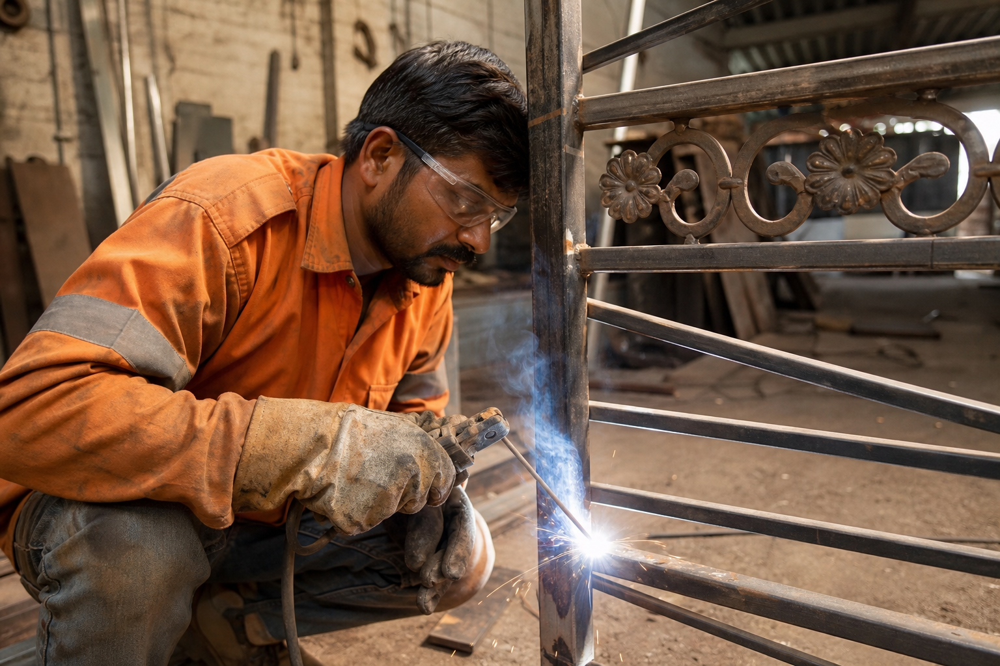
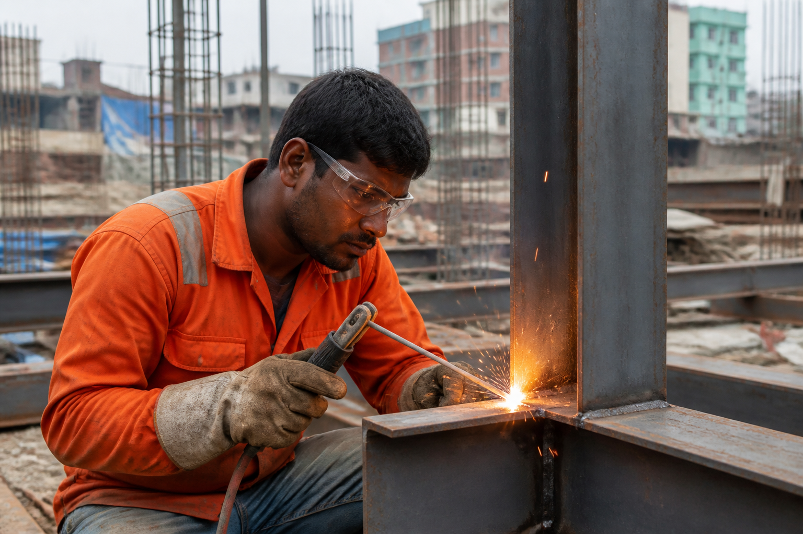
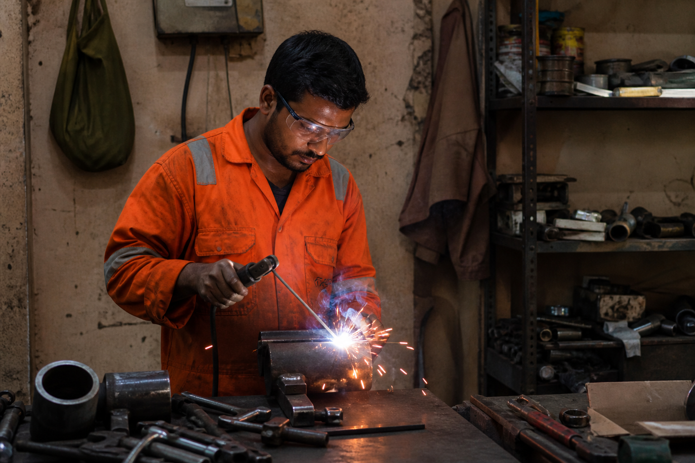

Base metal strength
Match mechanical properties. Mild steel fabrication typically uses E-6013 or E-7018 class electrodes. Low-alloy and high-tensile structures need E-7018 or grades specified on the drawing.
Technical guide
Hands-on SMAW guidance for Indian fabrication shops, structural yards, maintenance teams, and MIDC manufacturing units using Bharatweld electrodes.
Manual arc welding with coated electrodes remains the backbone of Indian industry — from gate and grill fabricators in tier-2 towns to heavy structural contractors and in-plant maintenance crews. A good weld is rarely about one setting alone; it is the balance of rod size, current, arc length, travel speed, and rod angle for the joint in front of you.
This guide translates core welding procedure principles into practical steps you can apply on transformer sets, diesel welders, and modern inverters found across construction sites and fabrication bays.

Core technique
Master these before chasing advanced joints. Each variable affects the molten pool, penetration, and final bead profile.

Listen for a steady, controlled sizzling arc — not loud cracking or a dull drag. Watch the molten pool: it should stay slightly ahead of the arc and flow evenly into the cooling bead behind you. After slag removal, ripples should be regular, the face smooth, with no overlap onto base metal and no undercut along the toes.

Rod diameter controls heat input and how much metal you deposit per pass. Choose size based on joint type, plate thickness, welding position, and whether you need root penetration or a cosmetic cap.
Tip: A rod that is too large overheats thin MS sheet; too small on thick plate causes lack of fusion and repeated passes.

Current must match rod size and position. Manufacturer tables on the box are your starting point — then fine-tune by ear and by how the pool behaves on your actual machine and cable length.
Site note: Long leads and generator welders on remote construction jobs often need slightly higher settings — adjust arc length first before maxing amperage.

Arc length is the gap between the rod tip and the pool. On most SMAW work it should stay close to the metal core diameter — not the full coated size of the electrode.
Outdoors: Wind and long arcs increase spatter and porosity — use screens where possible on critical structural work.

Travel speed is how fast you move along the joint. It decides how long heat stays in the metal and whether slag and gas can escape before the pool freezes.
Fabrication bays: Mark stop/start points on repeat jobs so every welder matches production speed and appearance.

Angle matters most on fillet welds, lap joints, and deep groove passes where you must direct heat into both members without cutting away the vertical or horizontal toe.
Common in India: Stair stringers, platform brackets, and MS gate frames — practice 6 mm fillets flat before moving to vertical-up production work.
Electrode selection
Before you open a new box on site, match the rod to metal, position, power supply, and the service the weld will see.
Match mechanical properties. Mild steel fabrication typically uses E-6013 or E-7018 class electrodes. Low-alloy and high-tensile structures need E-7018 or grades specified on the drawing.
Know what you are joining. Plain carbon steel accepts most rutile or low-hydrogen rods. Alloy or stainless grades need a matching composition — wrong chemistry leads to crack-sensitive welds.
Bharatweld: E-308L for 304/308 stainless in food & chemical plants
Flat, horizontal, vertical-up, and overhead each demand electrodes designed for that position. Using a flat-only rod vertically often gives excessive drip and a weak profile.
Site: Overhead maintenance in plants — practice on scrap before production overhead passes
Some rods run best on DC; others on AC site welders. Check polarity (DCEP / DCEN) on the machine label and the electrode packet — incorrect polarity causes unstable arc and poor penetration.
Tip: Many Indian workshops still use AC transformers — choose electrodes rated for your supply
Root gaps and bevels dictate penetration needs. Tight square joints may need a digging arc; wide gaps or thin sheet need a softer, lower-penetration character to avoid blow-through.
Fabrication: Poor fit-up on truss nodes — fix gap with tacking, not by flooding one slow pass
Thick sections and restrained assemblies build stress. Prefer electrodes with higher ductility and low-hydrogen practice on heavy plate and complicated frames to reduce cracking.
Heavy industry: E-7018 with controlled handling on mining and structural plate work
Low temperature, impact loading, vibration, or corrosive environments may require specific grades or low-hydrogen processes. Always follow project WPS or client specification when provided.
Examples: Outdoor gates (weather) · Pressure-boundary work (spec-controlled) · Stainless tanks (E-308L)
Flat-position bulk work may justify larger diameters or high-deposition types. Mixed-position fabrication shops often keep a core range (2.5, 3.15, 4 mm) of proven grades to reduce changeover.
Also consider: Cutting electrodes for gouging · Manganese for hardfacing wear areas



Our team supports distributors, fabricators, and plant maintenance teams across Maharashtra and India.